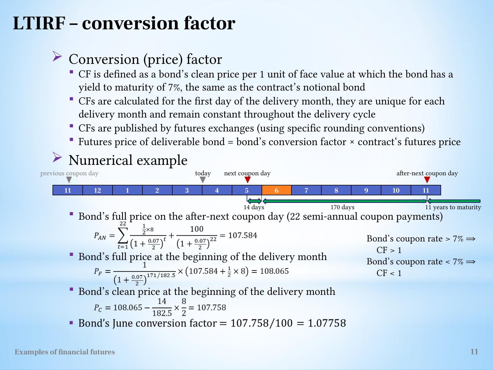
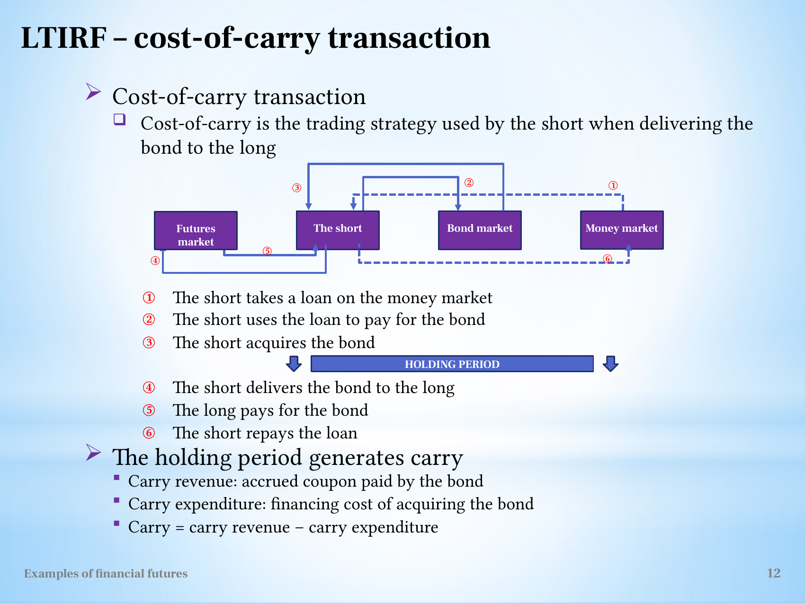

Convert bond-futures quotations into clean factors, full invoices and conditional carry
Explanation, worked examples and practice
Useful first: Convert futures quotations into payoff and conditional loss bounds
Outcome and conditions
The notional contract and its monetary scale Conversion factor: price at the contract's reference yield The short's cost-of-carry transaction Delivery timing under the source's carry rule
Study conditions, assessment scope and sources
Explain clean reference valuation and compute a supplied bond-futures invoice/carry decision without importing inconsistent day counts. Required components: bond_quote_payoff_and_margin, reference_valuation_and_invoice, carry_timing_and_selection_limits. Supported work may use the cited notes; independent checks use no notes, internet, solution or hints. A basic calculator and blank paper are allowed; reasoning, formula selection and assumptions must be supplied by the learner. Numerical examples below are agent-created hypothetical instantiations unless explicitly labelled as a finished-note example. They do not assert current market or policy facts.
Prerequisites and checks
Check the prerequisites
O012-P1 / item_version 1: O002 is needed because clean quote changes scale through face/multiplier and short direction. Prompt: Short multiplier \(1000\), quote falls \(.02\): gain and currency scale? Key: \(+20\) currency units per contract, because short sign reverses the quote change. Pass requires the keyed mechanism and qualification; partial means an omitted step; fail means a conflicting mechanism. Adequate committed evidence under a compatible criterion permits skipping this diagnostic. Otherwise repair through Outcome and conditions before continuing.
Motivation and explanation
Bond quotes are prices per \(100\) face. A \(100000\)-face contract therefore multiplies each quote point by \(1000\). Clean price omits accrued coupon; full price adds it. A conversion factor prices the deliverable at the contract reference yield, rather than its market yield: PV the remaining coupons and principal at the later coupon date, add the coupon due at that date and discount the combined cash value back to the earlier valuation date using the declared fraction, subtract reference accrued coupon, divide by \(100\). The finished-note example uses semiannual coupon \(4\) and periodic reference yield \(.035\); its later-date value \(P_{AN}=\sum_{j=1}^{22}\frac{4}{1.035^j}+\frac{100}{1.035^{22}}\). Earlier full value is \(P_F=(P_{AN}+4)/(1.035)^{\mathrm{fraction}}\), followed by the stated accrued-coupon subtraction and /\(100\). Its170/171 convention conflict prevents blindly copying a numerical factor. In prepared calculations \(\mathrm{CF}\) is declared consistently. Delivery cash per \(100\) is \(\text{futures clean price}\times\mathrm{CF}+\text{delivery accrued coupon}\). A short carry trade borrows, buys the cash bond, receives/reinvests coupons, delivers and repays. \(\text{Simplified daily carry}=\text{annual coupon}/365-\text{full purchase price}\times\text{funding rate}/365\). Positive constant carry rewards later delivery, negative earlier, only under the note's simplified conditions. \(\mathrm{CF}\) corrects reference characteristics, not actual funding economics; CTD needs eligible-basket comparison.
Read the full explanation
Reading context
Deliver these complete reused passages before the worked example; the earlier concise teaching prompts are checkpoints, not substitutes. Necessary prerequisite lessons remain the routes specified above. Course-organization details in O001 are supporting context, not additional scoring components.
Source passage
Origin: reused complete checked passage Bond futures, conversion factors and delivery; fingerprint a9656034a515703d258f470320f1ea171d1dcd964701cf8a1f19c755171cfec1. Heading depth alone is adapted.
Bond futures, conversion factors and delivery
How can one futures contract allow delivery of several real bonds when its underlying asset is a notional bond? Long-term bond futures specify a standardized reference instrument, then use a conversion factor to adjust the invoice for an eligible deliverable bond. The short chooses the bond and, in this tutorial, its delivery date within the month. Those options connect bond pricing to financing and coupon income. The lecture's hypothetical terms are recorded as supplied examples. L11(ExamplesOfFinancialFutures).pptx, slide 2 L11(ExamplesOfFinancialFutures).pptx, slide 9 L11(ExamplesOfFinancialFutures).pptx, slide 11 L11(ExamplesOfFinancialFutures).pptx, slide 13 L11(ExamplesOfFinancialFutures).pptx, slide 14
The notional contract and its monetary scale
The Long-term Treasury Bond Futures Tutorial refers to a notional 20-year Treasury bond with USD 100,000 face value and 7% yield to maturity. Its quotation \(QP\) is a clean price per USD 100 nominal value, excluding accrued coupon. Since \(100000/100=1000\),
where \(CV\) is contract value in dollars. A tick is USD 0.01 in the quoted price, so it changes contract value by \(1000(0.01)=\text{USD }10\). Initial margin is USD 2,000, 2% of nominal contract value. Delivery months are March, June, September and December. The last trading day is two business days before the last business day of the delivery month. The short can deliver on any business day of the month. The source defines EDSP as the contract's futures price at 11:00 a.m. on the second business day before that last trading date. L11(ExamplesOfFinancialFutures).pptx, slide 9

The full hypothetical specification distinguishes the quotation per USD 100 from the USD 100,000 contract. L11(ExamplesOfFinancialFutures).pptx, slide 9
The source says the zero-basis-at-maturity rule is theoretically applicable to the CTD bond because the underlying reference bond is notional. This qualification links convergence to the eligible delivery choice rather than asserting that every bond's raw clean spot quotation equals the unadjusted futures quotation. The lecture does not derive a precise conversion-adjusted basis formula here. L11(ExamplesOfFinancialFutures).pptx, slide 9
A short closing trade
The short sells ten contracts at \(F_0=91.38\) and buys them back 45 days later at \(F_{45}=91.23\). The quotation fell by 15 ticks. A short benefits from that fall:
The initial-margin return is \(1500/(10\times2000)=7.5\%\). The source's simple annual scaling is \(0.075\times365/45=60.83\%\). This closes the obligation before the separate delivery illustration. Read the contract before calculating explains the common sign and margin-denominator rules. L11(ExamplesOfFinancialFutures).pptx, slide 10
Clean price, full price and coupon dates
A clean price excludes accrued coupon. A full price includes the compensation owed to the seller for coupon accrued since the previous coupon payment:
All quantities must use the same face-value basis. A purchase of the source's eligible bond costs a full spot price, while the contract quotes clean. This distinction is necessary when comparing the initial cash outflow with the eventual delivery invoice. L11(ExamplesOfFinancialFutures).pptx, slide 9 L11(ExamplesOfFinancialFutures).pptx, slide 10 L11(ExamplesOfFinancialFutures).pptx, slide 14 L11(ExamplesOfFinancialFutures).pptx, slide 15
The eligible-bond example has USD 100 face value, an annual coupon of 8% paid semi-annually, hence USD 4 per coupon, and 12 years remaining from the previous coupon date. The timeline records a previous coupon on 18 November, purchase today on 1 April, the next coupon on 18 May, and the after-next coupon on 18 November. It displays a June delivery month, initial full spot price \(S_0=99.13\), initial clean futures quotation \(F_0=88.19\), and financing rate \(r=6\%\). These values belong to the delivery example, not the earlier \(91.38\to91.23\) closing trade. L11(ExamplesOfFinancialFutures).pptx, slide 10

The original delivery timeline keeps coupon dates, full spot price and clean futures quotation visible. Its displayed day counts are source assumptions; related inconsistencies are discussed below. L11(ExamplesOfFinancialFutures).pptx, slide 10
Conversion factor: price at the contract's reference yield
A bond's conversion factor \(CF\) is its clean price per one unit of face value when valued at the contract's 7% reference yield. It is dimensionless. The exchange calculates a factor for the first day of each delivery month and keeps that factor constant during the delivery cycle, using its specified rounding conventions. The source's adjusted clean delivery price is
where \(FP\) is the contract's futures quotation. Accrued coupon must then be added to obtain the full invoice price. A factor above one increases the clean invoice relative to \(FP\); a factor below one reduces it. In the source's valuation example, a coupon above the 7% reference yield gives \(CF>1\), and one below it gives \(CF<1\). This is a reference-yield adjustment, rather than a claim that different eligible bonds have identical current market prices or implied repo rates. L11(ExamplesOfFinancialFutures).pptx, slide 11 L11(ExamplesOfFinancialFutures).pptx, slide 14 L11(ExamplesOfFinancialFutures).pptx, slide 15
Follow the source's valuation steps
The coupon is USD 4 every half year and the reference half-year yield is \(0.07/2=0.035\). On the after-next coupon date, the source values 22 remaining coupon payments and the final principal:
Here \(t\) counts half-year periods. Each payment is discounted to that coupon date. To obtain the full price at the beginning of June, the source adds the USD 4 coupon due at the later valuation date, then discounts back a fractional half-year. Its printed formula is
It subtracts accrued coupon for 14 days to obtain a clean price:
and divides by 100 face value to give \(CF=1.07758\). The cash-flow reasoning is: discount future full value, remove accrued coupon, normalize by face value. L11(ExamplesOfFinancialFutures).pptx, slide 11
The conversion-factor example has a day-count error
The printed formula's 171 days disagree with the 170 days on the source timeline and with its numerical result. Evaluating the printed expression gives approximately \(108.044\) for \(P_F\), \(107.737\) for the clean price, and \(CF\approx1.077373\). Using 170/182.5 gives \(108.065\), \(107.758\) and \(1.07758\), matching the displayed results. These are agent recomputations from the original source formula and data. The note preserves both the printed formula and its discrepancy, rather than treating the stated factor as a verified consequence of 171 days. Use an explicitly supplied consistent factor for later calculations, or state a consistent day-count choice. L11(ExamplesOfFinancialFutures).pptx, slide 10 L11(ExamplesOfFinancialFutures).pptx, slide 11

Source conversion-factor definition, coupon timeline and printed calculations. The 171-day exponent and 170-day diagram are both visible. L11(ExamplesOfFinancialFutures).pptx, slide 11
The short's cost-of-carry transaction
The short borrows in the money market, uses the loan to pay the full bond purchase price, and acquires the bond. During the holding period, the bond produces coupon income while the loan produces a financing cost. At delivery, the short transfers the bond to the long, receives the invoice price, and repays the loan. The source calls
It uses accrued coupon as carry revenue and interest on the financed full purchase price as carry expenditure. This sign convention matters: positive carry means that continuing to hold the financed bond earns more than it costs. L11(ExamplesOfFinancialFutures).pptx, slide 12

The six labeled flows show borrowing, bond acquisition, delivery, payment and loan repayment. The diagram links cash financing to the physical delivery obligation. L11(ExamplesOfFinancialFutures).pptx, slide 12
Delivery timing under the source's carry rule
The source's rule chooses the last business day of the delivery month when daily carry is positive, and the first business day when it is negative. Its example computes, per USD 100 face value,
so daily carry is approximately USD 0.00562. Continuing to hold adds positive carry, giving the source's choice of the last business day. With negative carry, waiting instead erodes the transaction's return. This is the lecture's simplified constant daily-carry rule. Its stronger sentence that in reality only the first or last business day is chosen is retained as a source assertion, not expanded into a universal market rule beyond the illustration. L11(ExamplesOfFinancialFutures).pptx, slide 13
What to carry forward
The contract quotation, full bond purchase price and full invoice price have different roles. Conversion factors adjust the clean delivery amount for a chosen bond, while accrued coupon completes the invoice. Carry links the bond's income to the financing cost and determines the source's delivery-date choice. Implied repo rate and cheapest to deliver develops the next question: which eligible bond gives the greatest return from purchase to delivery? L11(ExamplesOfFinancialFutures).pptx, slide 11 L11(ExamplesOfFinancialFutures).pptx, slide 12 L11(ExamplesOfFinancialFutures).pptx, slide 13 L11(ExamplesOfFinancialFutures).pptx, slide 14
Worked example
O012-W1 / item_version 1, worked_example. Prompt: Hypothetical supplied bond contract quote is clean per100 face, face100000 so multiplier1000, tick0.01 and margin USD2000 each. A short 10 opens 91.38, closes 91.23. Separately an eligible delivery bond has futures price88.19, declared clean conversion factor1.07758, delivery accrued coupon1 per100, full purchase price99.13, annual coupon8 per100 and annual simple funding6%. Compute tick/P&L/margin return, full invoice and daily carry; explain delivery timing under the source constant-carry rule. Derive the generic conversion-factor valuation sequence from coupon PV at the contract reference yield to full reference price, then clean price and normalization by100; state why an original day-count error cannot be silently reused. Does the lowest clean bond price automatically choose CTD or does this carry rule prove every exchange optimum?
Steps and interpretation: \(\text{Tick}=.01\times1000=\mathrm{USD}10\). Short \(G=-10\times 1000\times (91.23-91.38)=\mathrm{USD}1500.000000\); collateral \(20000\), return \(7.5\%\). \(\text{Full invoice per100}=88.19\times 1.07758+1=96.031780\); actual face \(100000\) \(\text{invoice} \times 1000=\mathrm{USD}96031.780200\). \(\text{Daily carry per100}=8/365-99.13\times 0.06/365=0.005622466\); positive chooses last allowed day, negative first, under the supplied constant-carry simplification. \(\mathrm{CF}\): discount every remaining coupon plus principal \(100\) at the specified reference periodic yield, add the coupon due at the later valuation date, discount that combined value BACK to the earlier valuation date by the declared fractional period, subtract reference-date accrued coupon, divide clean reference price by \(100\). \(\mathrm{CF}\) is dimensionless and fixed for the delivery month; invoice then adds actual delivery accrued coupon. Source170/171-day inconsistency is disclosed; a consistent declared timeline is needed for numerical valuation. Lowest clean price alone is not CTD; compare eligible bonds' implied repo rates on common assumptions. Actual carry/date choices can require cash-flow-specific terms, so this first/last-day simplification is not universal.
Supported completion
Write your reasoning, then reveal the complete key to check each step.
A local draft for your own study.
Reveal explanation
Key: \(\text{Tick}=.01\times1000=\mathrm{USD}10\). Short \(G=-2\times 1000\times (95.90-96.00)=\mathrm{USD}200.000000\); collateral \(4000\), return \(5\%\). \(\text{Full invoice per100}=94\times 1.02+0.5=96.380000\); actual face \(100000\) \(\text{invoice} \times 1000=\mathrm{USD}96380.000000\). \(\text{Daily carry per100}=4/365-100\times 0.06/365=-0.005479452\); positive chooses last allowed day, negative first, under the supplied constant-carry simplification. \(\mathrm{CF}\): discount every remaining coupon plus principal \(100\) at the specified reference periodic yield, add the coupon due at the later valuation date, discount that combined value BACK to the earlier valuation date by the declared fractional period, subtract reference-date accrued coupon, divide clean reference price by \(100\). \(\mathrm{CF}\) is dimensionless and fixed for the delivery month; invoice then adds actual delivery accrued coupon. Source170/171-day inconsistency is disclosed; a consistent declared timeline is needed for numerical valuation. Lowest clean price alone is not CTD; compare eligible bonds' implied repo rates on common assumptions. Actual carry/date choices can require cash-flow-specific terms, so this first/last-day simplification is not universal.
Allowed support: show the named definition or equation in Motivation and explanation, then ask for the missing substitution and interpretation. At most two hints: first identify the relevant distinction; second point to the first keyed step. Reveal the worked solution if those fail. Supported success does not establish acquisition. Fade assistance only once the learner explains the keyed steps; then hide the solution and use an unused full check.
Rubric and independence
Self-assessment criteria and tutor checks
Pass requires every listed component, all requested outputs and essential keyed reasoning without a critical conceptual error. Algebraically equivalent formulas, explicitly defined opposite cash-flow signs and equivalent plain-language reasoning are accepted. Partial means a missing component or a correct method with an unresolved isolated arithmetic slip; fail means the central mechanism or condition is wrong. Unscorable means the response or help/exposure conditions cannot be established. Unknown conditions never certify independence. Arithmetic slips require independent correction before a pass. No numerical grade is invented.
Critical errors: Applying accrued coupon before multiplying \(\mathrm{CF}\); calling \(\mathrm{CF}\) a market price or funding rate; dimensional missing face multiplier; universal first/last date assertion; choosing CTD from lowest clean price.
Acquisition requires two distinct unassisted passes from I1/I2/D1/D2 using the exact six routes in metadata. Each full prompt and key covers every component; any pair therefore covers the whole outcome twice. A fresh D item used for acquisition cannot later certify delayed retention. Worked/support/prerequisite items and the narrow C1 correction cannot substitute for a full check. The finite bank must not be reused after exposure; request a plan_issue when fewer than two fresh full items remain.
| Component | I1 | I2 | D1 | D2 |
|---|---|---|---|---|
| bond_quote_payoff_and_margin | required | required | required | required |
| reference_valuation_and_invoice | required | required | required | required |
| carry_timing_and_selection_limits | required | required | required | required |
Misconceptions and correction
Confusing clean and full invoice loses a coupon component. Keep two labelled columns: \(\text{clean} \mathrm{FP}\times \mathrm{CF}\), then delivery \(\mathrm{AC}\). Distinguish reference yield from market/funding yield. Observe the learner's reasoning before diagnosing: a sign or omitted word alone is tentative. Score before help. O012-C1 / item_version 1, narrow_correction. Fresh prompt: Fresh narrow check: futures clean quote \(80\), \(\mathrm{CF}=1.10\), delivery \(\mathrm{AC}=2\) per \(100\). Full invoice is \((80+2)\times1.10\)? Key and rubric: No:\(80\times1.10+2=90\) per \(100\). Factor scales clean reference price, while actual accrued coupon is added after. Pass only if the keyed repaired component is supplied; partial for an omission or arithmetic slip; fail for the same conflicting mechanism. C1 is not a full independent check. After two ineffective hints show the relevant worked step; after another failed correction pause and return to the named prerequisite or explanation.
Immediate and delayed checks
All items are item_version 1 and full_capability_check. I1/I2 are immediate forms; D1/D2 are distinct delayed forms. Delayed success requires an unused unassisted item before recap, at least 24 actual elapsed hours after acquisition and the most recent relevant teaching/solution exposure, with intervening exposure recorded. A date change alone does not qualify. Early D attempts may be acquisition checks only. Each item is a bounded parallel or near-context variant, not proof of broad transfer. Each key states the full required response; do not improvise extra variants.
A local draft for your own study.
Reveal explanation
Key and essential rubric: \(\text{Tick}=.01\times1000=\mathrm{USD}10\). Short \(G=-3\times 1000\times (89.20-89.00)=\mathrm{USD}-600.000000\); collateral \(6000\), return \(-10\%\). \(\text{Full invoice per100}=90\times 0.98+1.2=89.400000\); actual face \(100000\) \(\text{invoice} \times 1000=\mathrm{USD}89400.000000\). \(\text{Daily carry per100}=8/365-96\times 0.05/365=0.008767123\); positive chooses last allowed day, negative first, under the supplied constant-carry simplification. \(\mathrm{CF}\): discount every remaining coupon plus principal \(100\) at the specified reference periodic yield, add the coupon due at the later valuation date, discount that combined value BACK to the earlier valuation date by the declared fractional period, subtract reference-date accrued coupon, divide clean reference price by \(100\). \(\mathrm{CF}\) is dimensionless and fixed for the delivery month; invoice then adds actual delivery accrued coupon. Source170/171-day inconsistency is disclosed; a consistent declared timeline is needed for numerical valuation. Lowest clean price alone is not CTD; compare eligible bonds' implied repo rates on common assumptions. Actual carry/date choices can require cash-flow-specific terms, so this first/last-day simplification is not universal. All components are required.
A local draft for your own study.
Reveal explanation
Key and essential rubric: \(\text{Tick}=.01\times1000=\mathrm{USD}10\). Short \(G=-4\times 1000\times (101.80-102.00)=\mathrm{USD}800.000000\); collateral \(8000\), return \(10\%\). \(\text{Full invoice per100}=99\times 1.03+0.8=102.770000\); actual face \(100000\) \(\text{invoice} \times 1000=\mathrm{USD}102770.000000\). \(\text{Daily carry per100}=5/365-104\times 0.07/365=-0.006246575\); positive chooses last allowed day, negative first, under the supplied constant-carry simplification. \(\mathrm{CF}\): discount every remaining coupon plus principal \(100\) at the specified reference periodic yield, add the coupon due at the later valuation date, discount that combined value BACK to the earlier valuation date by the declared fractional period, subtract reference-date accrued coupon, divide clean reference price by \(100\). \(\mathrm{CF}\) is dimensionless and fixed for the delivery month; invoice then adds actual delivery accrued coupon. Source170/171-day inconsistency is disclosed; a consistent declared timeline is needed for numerical valuation. Lowest clean price alone is not CTD; compare eligible bonds' implied repo rates on common assumptions. Actual carry/date choices can require cash-flow-specific terms, so this first/last-day simplification is not universal. All components are required.
A local draft for your own study.
Reveal explanation
Key and essential rubric: \(\text{Tick}=.01\times1000=\mathrm{USD}10\). Short \(G=-5\times 1000\times (98.10-98.00)=\mathrm{USD}-500.000000\); collateral \(10000\), return \(-5\%\). \(\text{Full invoice per100}=96\times 1.01+0.4=97.360000\); actual face \(100000\) \(\text{invoice} \times 1000=\mathrm{USD}97360.000000\). \(\text{Daily carry per100}=7/365-99\times 0.04/365=0.008328767\); positive chooses last allowed day, negative first, under the supplied constant-carry simplification. \(\mathrm{CF}\): discount every remaining coupon plus principal \(100\) at the specified reference periodic yield, add the coupon due at the later valuation date, discount that combined value BACK to the earlier valuation date by the declared fractional period, subtract reference-date accrued coupon, divide clean reference price by \(100\). \(\mathrm{CF}\) is dimensionless and fixed for the delivery month; invoice then adds actual delivery accrued coupon. Source170/171-day inconsistency is disclosed; a consistent declared timeline is needed for numerical valuation. Lowest clean price alone is not CTD; compare eligible bonds' implied repo rates on common assumptions. Actual carry/date choices can require cash-flow-specific terms, so this first/last-day simplification is not universal. All components are required.
A local draft for your own study.
Reveal explanation
Key and essential rubric: \(\text{Tick}=.01\times1000=\mathrm{USD}10\). Short \(G=-2\times 1000\times (92.70-93.00)=\mathrm{USD}600.000000\); collateral \(4000\), return \(15\%\). \(\text{Full invoice per100}=92\times 1.04+1.6=97.280000\); actual face \(100000\) \(\text{invoice} \times 1000=\mathrm{USD}97280.000000\). \(\text{Daily carry per100}=4/365-101\times 0.06/365=-0.005643836\); positive chooses last allowed day, negative first, under the supplied constant-carry simplification. \(\mathrm{CF}\): discount every remaining coupon plus principal \(100\) at the specified reference periodic yield, add the coupon due at the later valuation date, discount that combined value BACK to the earlier valuation date by the declared fractional period, subtract reference-date accrued coupon, divide clean reference price by \(100\). \(\mathrm{CF}\) is dimensionless and fixed for the delivery month; invoice then adds actual delivery accrued coupon. Source170/171-day inconsistency is disclosed; a consistent declared timeline is needed for numerical valuation. Lowest clean price alone is not CTD; compare eligible bonds' implied repo rates on common assumptions. Actual carry/date choices can require cash-flow-specific terms, so this first/last-day simplification is not universal. All components are required.
Content provenance and generation boundaries
Sources and scope
The complete checked-note passages above are reused with only heading-depth adaptation; exact origins and fingerprints are in source_manifest.md. Existing plan-created hypothetical exercises and their full keys are retained from P003; their algebra instantiates the included checked definitions. No new external academic claims are introduced. All figures retain checked vault-relative asset paths, captions and source qualifications. Main examples and assessment routes are fully prepared here.
Preserved assessment contract: only the named prepared full-capability items and six routes may establish acquisition or delayed evidence. Additional verified examples or practice may support explanation but cannot replace a named full check or reassessment gate. Teach may accept an independently verified equivalent method meeting the same pre-answer components and conditions. Ambiguous criteria or an exhausted fresh bank return to plan. The current objective revision is 2; unchanged item/criterion versions remain those explicitly stated above.